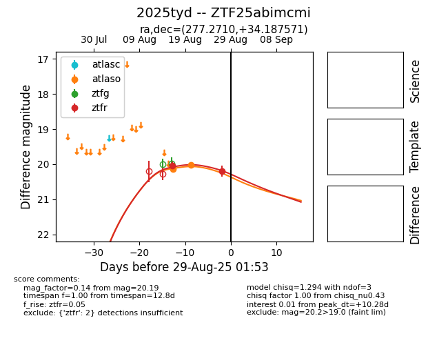

Target 2025tyd at 2025-08-27 06:17, see:
FINK: fink-portal.org/ZTF25abimcmi
Lasair: lasair-ztf.lsst.ac.uk/objects/ZTF25abimcmi
ALeRCE: alerce.online/object/ZTF25abimcmi
TNS: wis-tns.org/object/2025tyd
YSE: ziggy.ucolick.org/yse/transient_detail/2025tyd
alt names
ZTF25abimcmi (ztf,fink)
2025tyd (tns,yse)
coordinates:
equatorial (ra, dec) = (277.2710,+34.18757)
galactic (l, b) = (62.3037,+19.14210)
photometry
last atlaso=20.03, ztfr=20.19
2 atlaso, 2 ztfr detections
